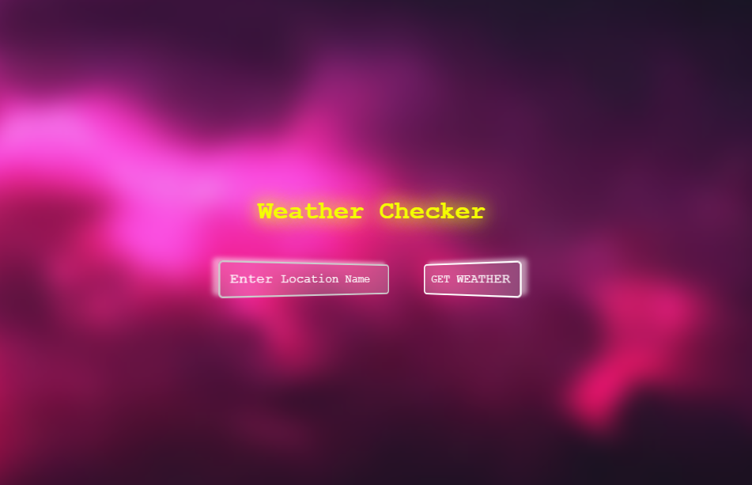

Weather Checker
An application that uses OpenWeather API to display current weather conditions.
click to VIEWAs a web developer, I primarily focus on creating websites. However, I also enjoy experimenting with smaller projects to explore new ideas and concepts. Below are some simple projects I’ve built over time. Feel free to check out the code or try the live demos!
An application that uses OpenWeather API to display current weather conditions.
click to VIEW